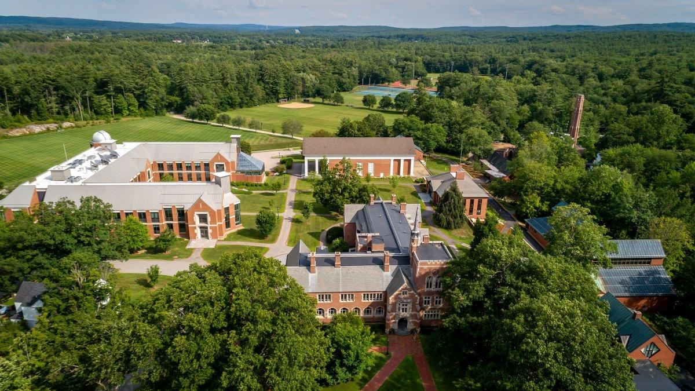

1. 영국 주요 지역과 학교
· 명문 보딩스쿨 — 이튼 칼리지(Eton College), 해로우(Harrow), 윈체스터 칼리지, 웨스트민스터 스쿨, 세인트폴스 스쿨, 럭비 스쿨, 차터하우스, 웰링턴 칼리지, 말보로 칼리지, 브라이턴 칼리지 등.
· 국제학교 — ACS 인터내셔널(코밤·힐링던), 세인트 폴스 걸스, 노스 런던 컬리지에이트(NLCS), 덜위치 칼리지 등. 다수가 IB 또는 A-Level을 운영합니다.

영국계 보딩스쿨 스타일 캠퍼스
2. 영국 교육 구조 — Year 표기와 IGCSE·A-Level
영국은 학년을 Year 1~13으로 표기합니다. 한국의 G1~G12와 대응하면 대략 Year = G + 1입니다(예: Year 10 ≈ G9).
· GCSE / IGCSE (Year 10~11 · 만 14~16세)
여러 과목(보통 8~10개)을 폭넓게 공부하고 시험을 봅니다. Maths, English Language, English Literature, Sciences(물리·화학·생물)가 핵심이며, 이 성적이 A-Level 과목 선택과 대학 지원의 기초가 됩니다.
· A-Level (Year 12~13 · 만 16~18세)
보통 3~4과목만 선택해 깊이 공부합니다. 수학은 Mathematics와 Further Mathematics로 나뉘며, 이공계 지망이면 Further Maths를 요구하는 대학이 많습니다. A-Level 과목 선택이 곧 대학 전공을 결정하므로 신중해야 합니다.
· 대학 지원 (UCAS)
영국 대학은 UCAS로 지원하며, 퍼스널 스테이트먼트(Personal Statement)라는 에세이와 예측 성적(predicted grades)이 핵심입니다. 옥스브리지와 의대는 별도 입학시험과 인터뷰가 있습니다.
3. G1~G12(Year) 학년별 준비 로드맵
영어 리딩·라이팅 기초와 수학 영어 용어. 11+ 입학시험을 준비한다면 이 시기부터 영어·수학·논리(verbal/non-verbal reasoning) 훈련이 필요합니다.
13+(Common Entrance) 입학 준비 시기. 영어 에세이, 수학(알지브라·지오메트리), 과학 기초. 보딩스쿨 지원 시 pre-test와 인터뷰가 이 구간에 있습니다.
IGCSE 본과정. 8~10과목을 동시에 관리해야 해 부담이 큽니다. 수학은 알지브라·지오메트리·삼각함수, 영어는 Language와 Literature 두 과목. 이 성적이 A-Level 선택을 좌우합니다.
A-Level 3~4과목 집중. 수학·Further Maths·물리·화학 등. 동시에 UCAS 퍼스널 스테이트먼트와 옥스브리지 입학시험·인터뷰 준비. 이 시기 1:1 관리가 가장 필요합니다.

기숙형 보딩스쿨 캠퍼스
4. 과목별 준비 방법 — 전 과목 관리
알지브라(Algebra) · 지오메트리(Geometry) · 삼각함수 · IGCSE Maths · A-Level Mathematics · Further Mathematics · 미적분(Calculus) · 통계 · 역학(Mechanics). 11+·13+ 수학 시험 대비 포함.
IGCSE English Language / Literature · 에세이 라이팅·첨삭 · 문학 텍스트 분석 · A-Level English · UCAS 퍼스널 스테이트먼트 · 입학 에세이 · 인터뷰(면접) 대비.
물리·화학·생물 (IGCSE Sciences, A-Level Physics/Chemistry/Biology). 개념과 영어 용어, 실험 리포트(practical) 관리.
프랑스어·스페인어·라틴어·중국어(IGCSE·A-Level). 경제(Economics), 역사, 컴퓨터과학까지 통합 관리 가능합니다.
5. 입학시험 준비 — 11+ · 13+ · 인터뷰
· 11+ (만 11세) — 영어, 수학, 언어추론·비언어추론(reasoning). 한국에는 없는 유형이라 별도 훈련이 필요합니다.
· 13+ / Common Entrance (만 13세) — 영어·수학·과학 등. 이튼 등 최상위 학교는 pre-test를 2~3년 전에 봅니다.
· 인터뷰(면접) — 영국 보딩스쿨은 인터뷰 비중이 큽니다. 유창성보다 생각의 깊이와 호기심을 봅니다. 최근 읽은 책, 관심 분야에 대해 이유와 예시를 붙여 말하는 훈련이 필요합니다.
· 준비 시점 — 인기 학교는 2~3년 전 등록을 받습니다. 최소 1~2년 전부터 움직이세요.

보딩스쿨 캠퍼스 전경
6. 시차와 화상과외
영국과 한국은 8~9시간 시차가 있습니다. 영국의 방과 후·저녁 시간이 한국의 이른 아침 또는 늦은 밤에 해당해 시간 조율이 필요하지만, 보딩스쿨은 기숙사 일과가 규칙적이라 오히려 고정 시간대를 잡기 수월합니다. 개념은 한국어로 정확히 잡고, A-Level·IGCSE의 영어 용어와 서술형 답안을 함께 훈련합니다.